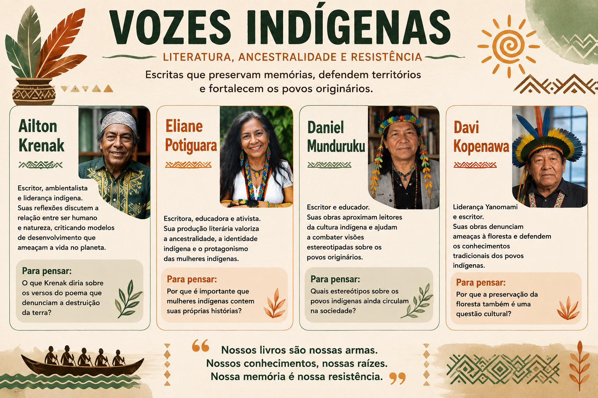

Ailton Krenak
Escritor, ambientalista e liderança indígena do povo Krenak. Sua produção questiona a relação da sociedade com a natureza e propõe outras formas de compreender a vida e o mundo.
Ancestralidade, território, memória e resistência

Durante o itinerário formativo Literatura e Sociedade, estudamos diferentes vozes indígenas brasileiras, conhecendo autores e autoras que utilizam a literatura como espaço de memória, resistência, identidade e valorização de seus povos.
As discussões realizadas em sala possibilitaram compreender que as culturas indígenas não pertencem apenas ao passado. Elas permanecem vivas e se manifestam por meio da literatura, da oralidade, das tradições, dos conhecimentos ancestrais e das diferentes formas de compreender a relação entre ser humano, comunidade e natureza.
Escritor, ambientalista e liderança indígena do povo Krenak. Sua produção questiona a relação da sociedade com a natureza e propõe outras formas de compreender a vida e o mundo.
Escritora, poeta, professora e ativista indígena do povo Potiguara. Sua produção valoriza a ancestralidade, a identidade indígena e o protagonismo das mulheres.
Escritor e educador indígena do povo Munduruku. Sua obra contribui para aproximar leitores das culturas indígenas e combater visões estereotipadas sobre os povos originários.
Liderança Yanomami, escritor e importante defensor dos povos indígenas e da floresta. Sua produção evidencia a importância dos conhecimentos tradicionais e da preservação do território.
A discussão sobre as representações indígenas também foi relacionada à leitura e análise do poema “Pranto Geral dos Índios”, de Carlos Drummond de Andrade.
A partir do poema, refletimos sobre a representação dos povos indígenas, as marcas da violência histórica, a perda, o apagamento cultural e as consequências da colonização para os povos originários.
A atividade também permitiu estabelecer relações entre a literatura e questões sociais presentes no Brasil, compreendendo como o texto literário pode recuperar memórias e provocar reflexões sobre acontecimentos históricos.
De que maneira a literatura pode contribuir para preservar a memória dos povos indígenas e questionar visões estereotipadas sobre os povos originários?
Conhecer autores e autoras indígenas possibilita ampliar nossa compreensão sobre a diversidade dos povos originários brasileiros.
As vozes estudadas mostram diferentes perspectivas sobre território, memória, natureza, identidade, ancestralidade e resistência. Dessa forma, a literatura torna-se também um espaço de valorização e reconhecimento dessas vozes.
O que muda em nossa compreensão sobre os povos indígenas quando passamos a conhecer suas próprias vozes, histórias e perspectivas?